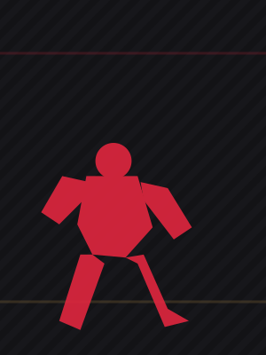

14 fights, zero losses, one belt
Silva's win streak outlasted three former champions before it ever reached a title shot.
9 min readOct 2026
Natalia Silva's career arc — from early losses on the regional circuit to a 14-fight win streak, three wins over former champions, and her first UFC title.

From a 20-5-1 record built the hard way to the UFC's newest champion — mapped fight by fight.

Won a wide decision over Jasmine Jasudavicius to begin what became a 14-fight winning streak.
Rattled off back-to-back finishes over Tereza Bleda and Victoria Leonardo, then added decisions over Andrea Lee and Viviane Araujo.
Beat Jéssica Andrade, Alexa Grasso, and Rose Namajunas in succession, establishing herself as the division's No. 1 contender.
Champion Valentina Shevchenko withdrew from a planned title defense and vacated the belt due to an injury expected to sideline her a year, clearing Silva's path to the vacant title.
Outpointed Wang Cong over five rounds to capture the vacant women's flyweight championship, improving to 9-0 in the UFC.
Silva's win streak outlasted three former champions before it ever reached a title shot.
An elite kickboxing pedigree and a 10-1 record weren't enough against a challenger who wouldn't be denied.
An injury nobody wanted created the opportunity Silva had been earning for four years.
Coaching adjustments and in-fight reads that shaped these career turns.
Read Corner Notes